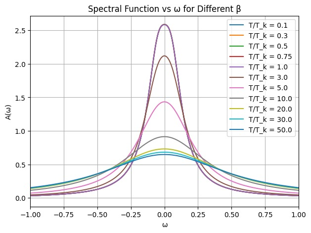
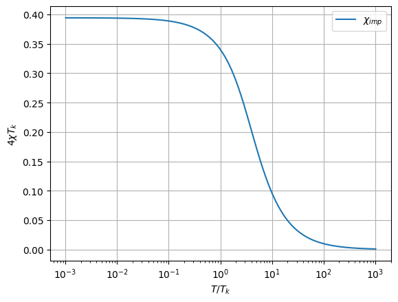
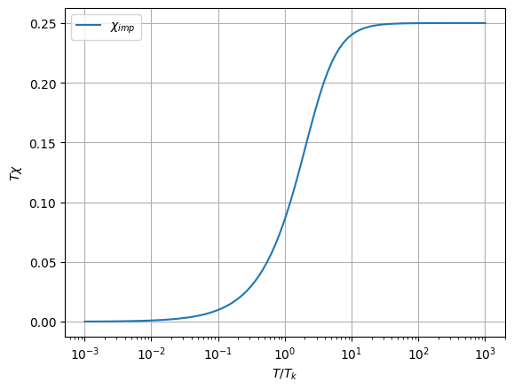

Duration: 2025–2026
Transition from a Fermi Liquid to a Mott Insulator through the Pseudogap phase at Finite Temperature
The goal of the project is to explore the nature of the transition from a Fermi liquid to a Mott insulator, focusing on the emergence of the pseudogap regime at finite temperature. The study aims to understand how strong interactions and finite-temperature modify this transition.
The analysis involves both analytical approaches and numerical simulations. Methods include Unitary Renormalization group. The results are benchmarked for confirmation.The computational work is implemented primarily in Python .
I have built the framework to use the URG at finite temperature. Exploring the properties of the Kondo model. Used the framework to study the spectral function of the Kondo model. Simulated how the central peak of the spectral function decreases with increasing temperature. I have got promising result and have benchmarked them with the well-established result in literature. Now I am studying the thermodynamic properties like the heat capacity and susceptibility(Below (\T_k\) is the kondo temperature).Some of the results are as follows



We expect to understand the phase transition from the Fermi liquid to the Mott insulator through the pseudogap phase at finite temperature. This pseudogap phase could be the parent phase for other phases like superconductors and strange metals. Understanding this pseudogap phase will open the door and shed light on other phases. This technique may be used to study other phase transitions at finite temperature.